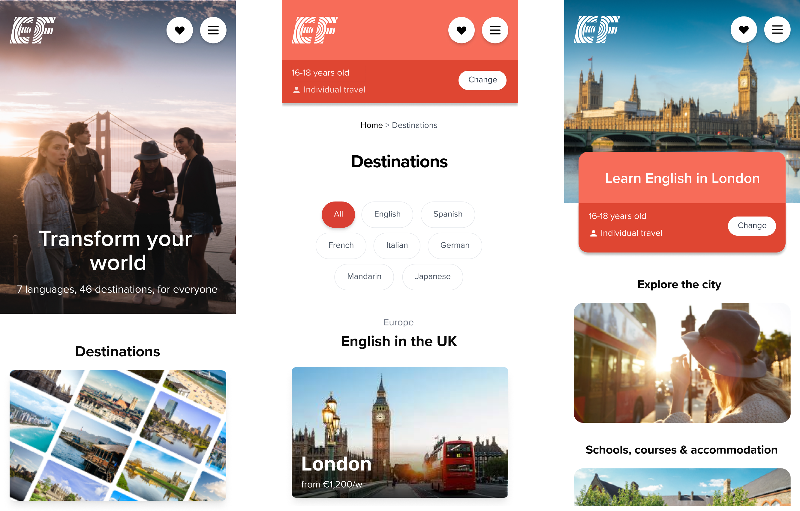
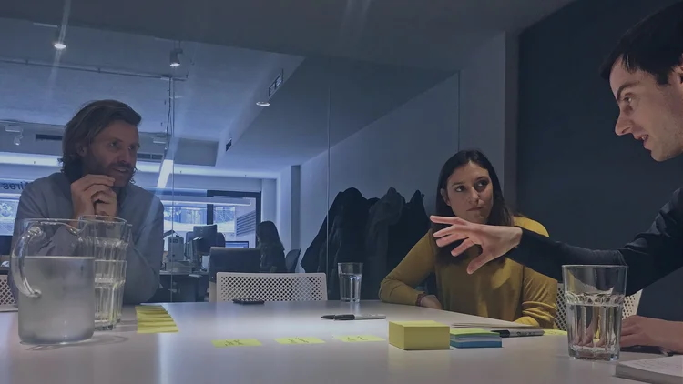
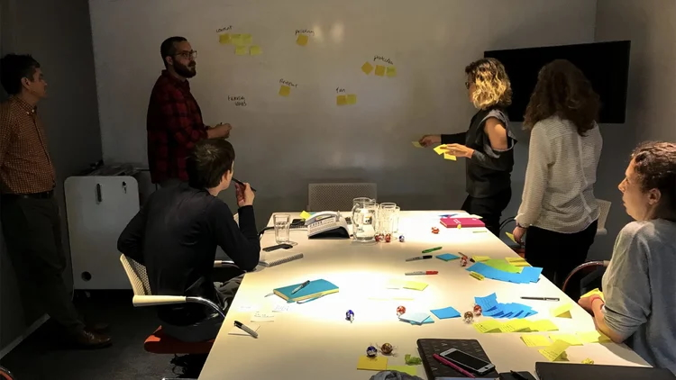
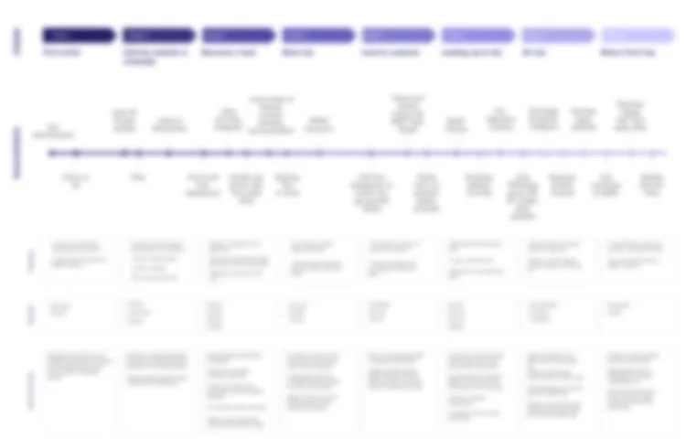
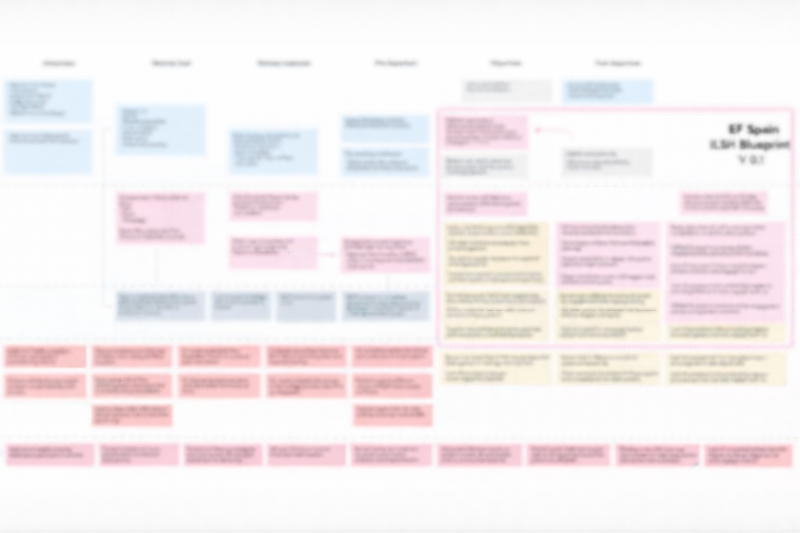
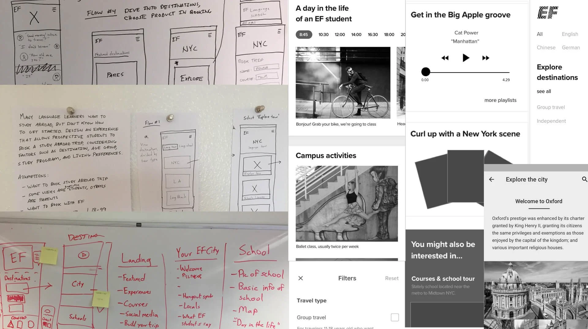
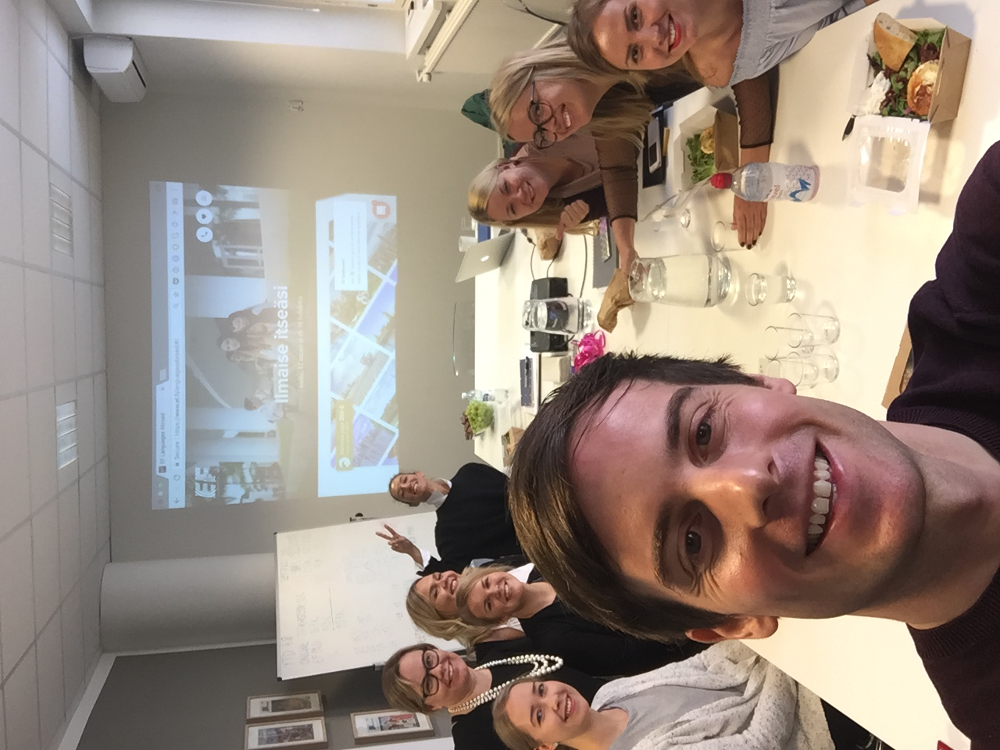
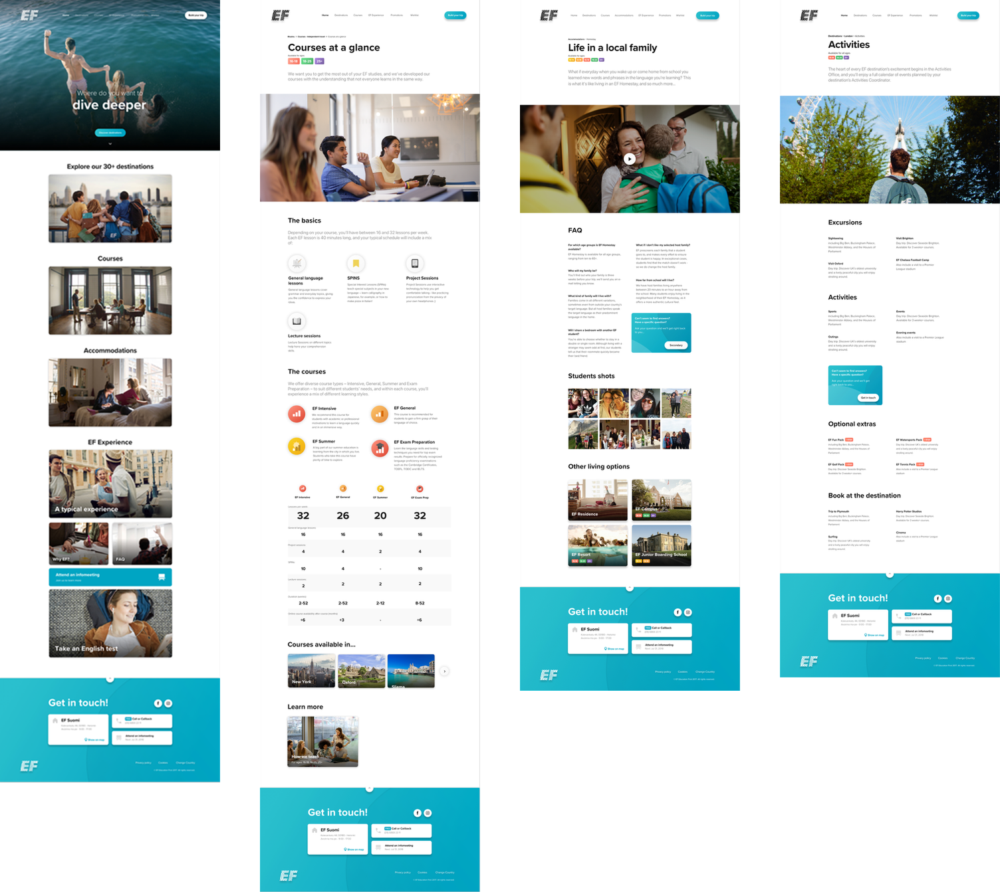

Transforming the End-to-End EF Customer Experience
EF Education First | Zürich, Switzerland

Goal
To design an end-to-end experience that drives bookings and long-term engagement by giving parents and kids the confidence to book their trip abroad.
Where we started
User challenges:
- Pre-booking: Users struggled to find relevant, inspiring content, relying on stock photography and generic messaging that failed to connect with kids and their parents.
- Post-booking: Engagement dropped, with missed opportunities to build loyalty and satisfaction.
Internal challenges:
- Operational inefficiencies delayed customer communication. Tools and processes didn't fully support decision-making clarity.
Our first steps
- Persuaded senior leadership to adopt authentic, user-centered content.
- Analyzed sales data to set clear goals and identify key markets.
- Conducted interviews with students, parents, and internal teams to uncover their experiences and needs.
- Led collaborative workshops with marketing, sales, and customer service teams to create a Customer Journey Map and develop a Service Blueprint.

User interviews

Workshop with sales and marketing
Customer Journey Map
We mapped the journey from inspiration to post-booking, uncovering key insights:
- Frustrations: Users faced unclear information during the decision-making process, leading to hesitation.
- Opportunities: Engagement gaps were identified after booking, during the trip, and after returning home, presenting opportunities to strengthen loyalty and satisfaction.
These findings shaped our priorities for content, communication, and product improvements.

Customer journey map: blurred to protect confidentiality
Service Blueprint
The service blueprint aligned user-facing interactions with internal operations, revealing:
- Frustrations: Manually handling inquiries, leading to inconsistent customer experiences within and across markets. Siloed teams poorly communicating.
- Opportunities: Operational inefficiencies like delayed parental notifications after a student's arrival pointed to quick wins. Centralizing communication.
This work influenced the hiring of a VP of Customer Experience.

Service blueprint: blurred to protect confidentiality
Design process
Designed content from sketches to wireframes and mockups, based on user research, with a focus on clear storytelling, authenticity, and compelling visuals to inspire and inform students and parents.

Early phase prototype
Exploring the city
Student stories and booking
Experiments to improve the bottom line
Designing a new digital experience was only part of the challenge. We needed to understand where customers were dropping off and run targeted experiments to measure real impact.
A/B testing with Adobe Analytics
We set up A/B tests with the analytics team. Two experiments stood out:
- CTA booking copy: We tested variations from "Get a free price quote" to "Reserve your spot." Action-oriented CTAs significantly increased click-through rates.
- Price placement: We tested surfacing the total price early versus late in the booking flow. Showing it earlier reduced drop-off, as parents felt more informed at checkout.
Introducing a chatbot
Parents were dropping off when they had unanswered questions about safety, logistics, and course details. We saw an opportunity to bridge this gap with a chatbot — giving parents instant answers while freeing up the sales team.
I evaluated five platforms — Intercom, Drift, Zendesk Chat, LiveChat, and Freshchat — against price, capability, and ease of integration. Intercom offered the best balance of automation and straightforward implementation.
Outcome
EF launched chatbots worldwide. I trained sales teams in Milan, Paris, Barcelona, and Helsinki, ensuring consistent adoption across markets.

Training the Helsinki sales team
Aligning stakeholders through video
I collaborated with a videographer to show what happens when parents send their child on an EF trip. I conducted all on-camera interviews, storyboarded the narrative, directed editing, and launched the video on the product website.
Impact
- Launched a new digital experience for EF, featuring rich, authentic content that inspired kids and parents to book language courses abroad.
- Presented research and design work to the company President, EVP of Marketing, and other leadership, influencing strategy and shifting focus toward online booking.
- Direct outcomes included the hiring of a VP of Customer Experience and a full-time videographer to produce authentic destination content.
- Research informed the product roadmap, uncovering new opportunities for design, content, and product improvements.
- Three months post-launch, user engagement increased, and response times improved through earlier, more streamlined customer communication by introducing a new chatbot. Customers in a key market also doubled their online bookings within one year.
Home
Courses
Living options
Activities
